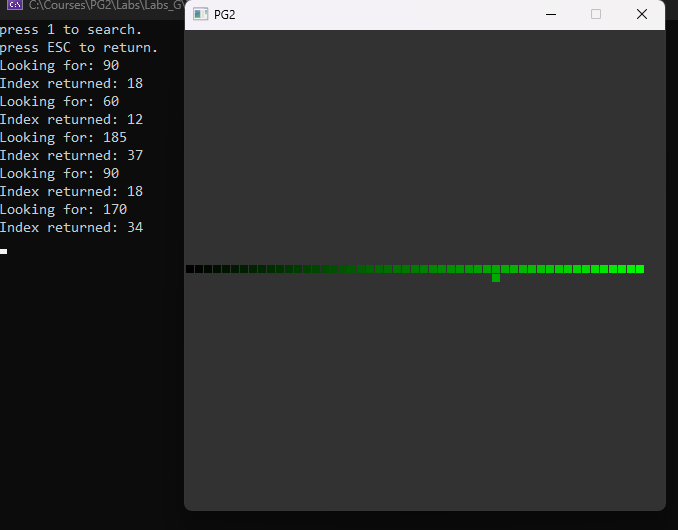

📘 Linear Search vs Binary Search
- 🧠 1. Conceptual Overview
- ⏱️ 2. Time Complexity
- 🧰 3. Use Cases
- 🧪 4. Example Scenario
- ✅ 5. Summary Table
- Practice it!
🧠 1. Conceptual Overview
Linear Search (Sequential Search)
Linear search is the simplest searching algorithm. It checks each element in a list one by one until it finds the target value or reaches the end of the list.
- No assumptions about the order of elements.
- Works on unsorted or sorted data.
- Easy to implement and understand.
//-1 means not found because it is an invalid index
const int NOT_FOUND = -1;
int LinearSearch(const std::vector<int>& numbers, int numberToFind)
{
int index = NOT_FOUND;
for (int i = 0; i < numbers.size(); i++)
{
if (numberToFind == numbers[i])
{
index = i;
break;
}
}
return index;
}
int main()
{
std::vector<int> nums = { 0,1,2,3,4,5,6,7,8,9 };
std::vector<int> searchNumbers = { 0,9,15,5 };
for (auto& searchNumber : searchNumbers)
{
int index = LinearSearch(nums, searchNumber);
if (index == NOT_FOUND)
std::cout << searchNumber << " was not found.\n";
else
std::cout << searchNumber << " was found at index " << index << ".\n";
}
}Output:
0 was found at index 0.
9 was found at index 9.
15 was not found.
5 was found at index 5.Binary Search
Binary search is a more efficient algorithm that repeatedly divides a sorted list in half to locate a target value.
- Requires the list to be sorted in advance.
- Elimates half of the remaining elements in each step.
- Much faster for large datasets.
Binary Search pseudocode
// initially called with low = 0, high = N-1
BinarySearch(A[0..N-1], searchTerm, low, high)
{
if (high < low)
return -1 // -1 means not found
mid = (low + high) / 2
if (searchTerm < A[mid])
return BinarySearch(A, searchTerm, low, mid-1)
else if (searchTerm > A[mid])
return BinarySearch(A, searchTerm, mid+1, high)
else
return mid //the searchTerm was found so return its index
}⏱️ 2. Time Complexity
| Algorithm | Best Case | Average Case | Worst Case |
|---|---|---|---|
| Linear Search | O(1) | O(n) | O(n) |
| Binary Search | O(1) | O(log n) | O(log n) |
- Linear Search: Best case is when the target is the first element; worst case is when it's the last or not present.
- Binary Search: Best case is when the target is the middle element; otherwise, it logarithmically narrows the search space.
🧰 3. Use Cases
Use Linear Search when:
- The dataset is unsorted.
- The list is small, and performance is not critical.
- You want a simple and quick implementation.
Use Binary Search when:
- The dataset is sorted.
- You need fast lookups in large datasets.
- You can afford the preprocessing cost of sorting (if not already sorted).
🧪 4. Example Scenario
Imagine searching for a student's ID in a list of 1,000 names:
- If the list is unsorted, linear search is your only option.
- If the list is sorted alphabetically, binary search can find the ID in about 10 comparisons (since \( \log_2(1000) \approx 10 \)).
✅ 5. Summary Table
| Feature | Linear Search | Binary Search |
|---|---|---|
| Requires Sorted Data | ❌ No | ✅ Yes |
| Time Complexity | O(n) | O(log n) |
| Implementation | ✅ Simple | ⚠️ Slightly complex |
| Flexibility | ✅ Any data | ❌ Sorted only |
| Performance (Large n) | ❌ Slower | ✅ Much faster |
💻 Practice it! Search
🧩 Part B-1: Linear Search
- Open
Searcher.hand add a method declaration calledLinearSearch. The method should search a vector ofLightobjects for a specific value of the green channel.
NOTE: open the Light.h file to see the declaration of the Light structure.
- Open
Searcher.cppand write a definition of theLinearSearchmethod.- Linearly search the vector.
- Compare the green channel of each object with the green parameter.
- If the values match, return the index of the light.
- If no match is found, return -1 which indicates that the color was not found.
- Open
Day5.cpp. - In the
Day5::PartB_1()method, find theTODOcomment and call yourLinearSearchmethod before the if block. Assign the returned index to thefoundIndexvariable.
🎯 Result
